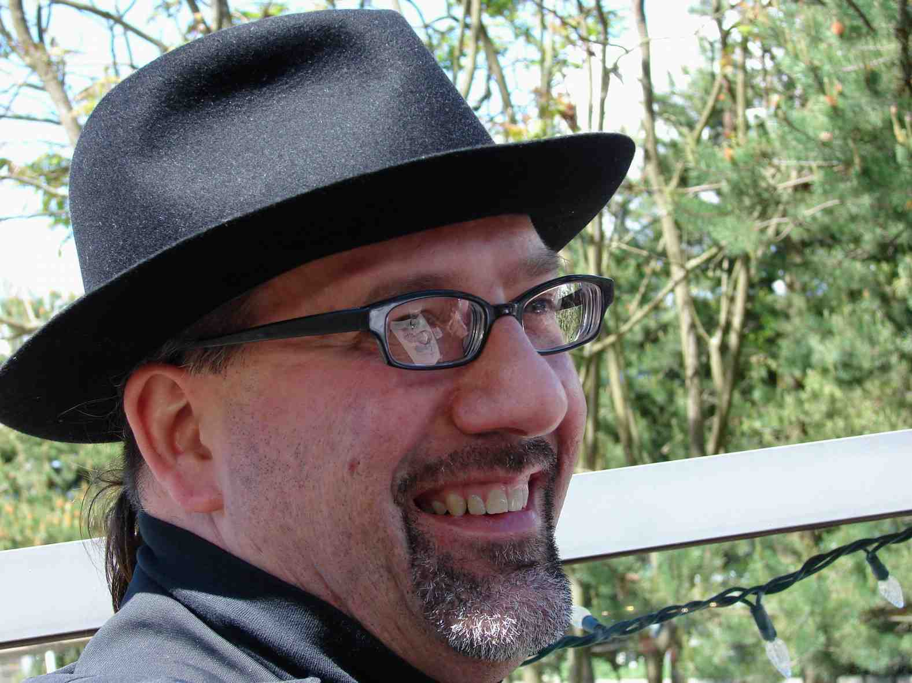
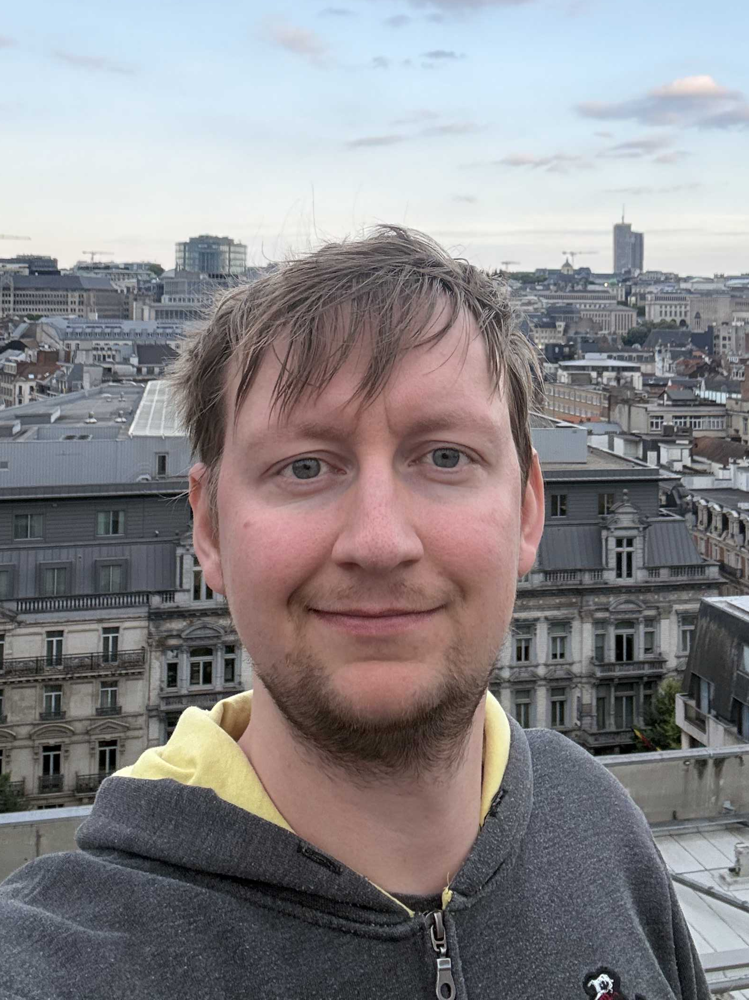

_01.jpg){kind=link}
Note: Locations and times may be changed.
Program: Monday, Tuesday
| 09:00 - 09:30 | Opening Location: A59S |
|||
| 09:30 - 10:30 | Keynote Location: A59S Session Chair: David Moreno-Lumbreras and Takashi Ishio 25 Years of Software Visualization Research: The Venues, Community, and Impacts Jonathan I. Maletic |
|||
| 10:30 - 11:00 | Coffee Break |
|||
| 11:00 - 12:30 | Session 1: Understanding Software Structure and Evolution Session Chair: Malte Hansen Location: A59S |
|||
| Dynamic Visualization of Java Stream Operations for Education using Marble Diagrams Sebastian Stiegler and Markus Weninger |
RESEARCH | |||
| An Encoding-Level Systematic Mapping of Code-City Visualizations Manuel Stöger, Johann Grabner, Enrik Ndou, Mario Bernhart and Thomas Grechenig |
RESEARCH | |||
| Depicting Software Evolution Using Spirals Phillip Entin, Marco Raglianti and Michele Lanza |
RESEARCH | |||
| Visualizing Object-Oriented Software Systems Through Procedurally Generated 3D Class Contours Mattia Giannaccari, Marco Raglianti and Michele Lanza |
RESEARCH | |||
| CodeSkyline: A Code-Map Visualization with Juxtaposed Views for Program Comprehension and Navigation Steven Lamarr Reynolds-Ringer, Tobias Mertz and Jörn Kohlhammer |
RESEARCH | |||
| 12:30 - 14:00 | Lunch Break |
|||
| 14:00 - 15:30 | Session 2: Interactive Tools and Visual Exploration of Software Session Chair: Markus Weninger Location: A59S |
|||
| IssueLens: A Visualization Tool for Historical Issue Tracking Data in GitLab-Based Software Projects Manuel Stöger, Johann Grabner, Markus Lupinek, Mario Bernhart and Thomas Grechenig |
TOOLS | |||
| Ritgard: T(r)opical Islands of Socio-Technical Artifacts on GitHub Adam Štěpánek, Marco Raglianti, Jan Byška, Barbora Kozlíková and Michele Lanza |
TOOLS | |||
| Git-Truck@Pluck – Contributor-Centric Coordinated Views for Hierarchical Visualization of Git Repository Evolution Jonas Nim Røssum, Gustav Müller Christoffersen and Mircea Lungu |
TOOLS | |||
| MosaiCode: Visualizing the Use and Evolution of Different Programming Languages in the Linux Kernel Michael Weyandt, Michael Collard and Jonathan Maletic |
CHALLENGE | |||
| Visualizing Linux Kernel Drivers as a CodeCity Inside a Dependency DOME David Moreno-Lumbreras, Malte Hansen, Gregorio Robles, Jesús M. González-Barahona and Wilhelm Hasselbring |
CHALLENGE | |||
| Visualization of Software Modules Using Monsters in Fantasy Role-Playing Games Ryota Mizutani, Daisuke Taniguchi, Masateru Tsunoda and Keitaro Nakasai |
POSTER | |||
| Demo/Poster Showcase 1 |
||||
| 15:30 - 16:00 | Coffee Break |
|||
| 16:00 - 17:30 | Session 3: Exploring Software Evolution, Code, and Developer Activity Session Chair: Shinpei Hayashi Location: A59S |
|||
| Holocular: A 3D Helix Visualization for Exploring Version-Controlled Repository Evolution Manuel Stöger, Johann Grabner, Maximilian Zenz, Mario Bernhart and Thomas Grechenig |
NIER | |||
| Coordinated Graph and Matrix Views for TLA+ State Space Analysis: A Design Study Humphrey Obie, Chuong Ho and Frank Amadin |
NIER | |||
| Pedagogical Execution Traces (PETs) for Educational Algorithm Visualization Markus Weninger |
NIER | |||
| Beyond Passive Visualization: Active Conflict Awareness in Git Repositories Manuel Stöger, Johann Grabner, Thomas Mörbauer, Mario Bernhart and Thomas Grechenig |
NIER | |||
| Toward Using Wave Function Collapse to Depict Software Systems Simone Lesinigo, Marco Raglianti and Michele Lanza |
NIER | |||
| From Metrics to Metaphors: Emotional Software Visualisation for Interdisciplinary Understanding Frieder Loch, Mirko Stocker, Simon Ott and Sarah Hofer |
NIER | |||
| A Graph-Based Source Code Multi-Diff Visualization Mario Pilz, Manuel Stöger, Johann Grabner, Mario Bernhart and Thomas Grechenig |
NIER | |||
| Visual Metaphors for Understanding the Impact of Code Changes on Software Evolution Stefan-Octavian Custura, Andreea Vescan and Radu Gaceanu |
NIER | |||
| Toward Visual Exploration of Agent Trajectories Carmen Armenti, Hao Li, Marco Raglianti, Bram Adams and Michele Lanza |
NIER | |||
| Agent ATO: Visualizing Agent Interaction Timelines from Logs Takuto Kawamoto, Yoshiki Higo and Raula Gaikovina Kula |
NIER | |||
| 19:30 - 21:00 | SCAM/VISSOFT Joint Dinner Location: La Pampanini 1956, Via San Pasquale 8, Benevento |
SOCIAL EVENTS | ||
| 09:30 - 10:30 | Joint Keynote with SCAM Location: Auditorium Session Chair: David Melski The Last Mile of Software Engineering Research: Lessons from Large Industrial Systems Benoit Verhaeghe |
|||
| 10:30 - 11:00 | Coffee Break |
|||
| 11:00 - 12:30 | Session 4: Understanding and Navigating Complex Software Systems Session Chair: Takashi Kobayashi Location: A59S |
|||
| Are Software Visualization Tools Actually Usable, or Just a Graveyard of Good Ideas? A Systematic Review and Replicability Assessment Sergio R. Montes-León, Paul Leger, David Moreno-Lumbreras, Daniel San Martiin Santibáñez and Antonio J. Romero-Barrera |
RESEARCH | |||
| FlowLens: Semantic Edge-Guided Functional Flow Visualization for Software Graphs Sami M'Hamdi, Hamamache Kheddouci, Damien Charlemagne and Olivier Bonsignour |
RESEARCH | |||
| A Chat Assistant for Software Exploration in a 3D Software Visualization Malte Hansen, Karim Issa and Wilhelm Hasselbring |
RESEARCH | |||
| Visualizing the Evolution of Data Access in Microservices Maxime André, Massimiliano Di Penta and Anthony Cleve |
RESEARCH | |||
| Seeing Is Not Complying: Intentional Architectural Erosion under Time Pressure despite Continuous Dependency Visualization Babette Bækgaard, Lotte Juul Damgaard and Mircea Lungu |
RESEARCH | |||
| D-Diff: An Interactive Environment for Adjusting Commit Boundaries Based on an Editable 3-way Diff Daiki Muto, Takayoshi Ueno and Shinpei Hayashi |
RESEARCH | |||
| 12:30 - 14:00 | Lunch Break |
|||
| 14:00 - 15:30 | Session 5: Visualizing Software in Practice Session Chair: Bonita Sharif Location: A59S |
|||
| Inside the Dependency DOME: An Immersive Dependency Ecosystem Visualization Diego Lucas-Luis, Gregorio Robles, Jesús M. González-Barahona and David Moreno-Lumbreras |
TOOLS | |||
| Interactive Runtime Visualization of Robotic Software Behavior with O3DE and ROS2 Héctor Martínez-Cabezas, David Moreno-Lumbreras, David Roldán-Álvarez and Jose M. Cañas-Plaza |
TOOLS | |||
| Unravel: Visualizing Rug Pulls during the Evolution of GitHub Workflows Edoardo Riggio and Cesare Pautasso |
TOOLS | |||
| MetroFlow: Visualizing Bioinformatics Workflow Source Code as Interactive Metro-Maps Lénora Buggenhoudt, George Marchment, Anne-Flore Cabouat, Frédéric Lemoine, Caroline Appert and Sarah Cohen-Boulakia |
TOOLS | |||
| One Tool to See Them All: Circle Packing and Hierarchical Edge Bundling Meet Control Software Lisa Sonnleithner, Andrea Franziska Zoitl, Oleksandr Kudriavchenko and Annabell Rößler |
TOOLS | |||
| Analysis and Visualization of the Linux Kernel's Software Evolution Using the City Metaphor Malte Hansen, Lukas Damerau, Moritz Bugla, David Moreno-Lumbreras and Wilhelm Hasselbring |
CHALLENGE | |||
| Demo/Poster Showcase 2 |
||||
| 15:30 - 16:00 | Coffee Break |
|||
| 16:00 - 17:00 | Session 6: Rethinking Software Visualization Session Chair: David Moreno-Lumbreras and Takashi Ishio Location: A59S |
|||
| Navigating Software at Different Abstraction Levels: From Code City to Code Pablo Sabater García, Alejandro Toribio, David Moreno, Sergio Montes, Diego Suárez and Gregorio Robles |
VISIONS | |||
| Re-Imagining Software Visualization for Spec-Driven Development Giovanni Rosa, Mario Linares-Vásquez and Gregorio Robles |
VISIONS | |||
| Most Influential Paper Talk |
MIP | |||
| Towards Actionable Visualization: Ten Years Later, What Generative AI Changes and What It Cannot Leonel Merino, Mohammad Ghafari and Oscar Nierstrasz |
VISIONS | |||
| 17:00 - 17:30 | Town Hall, Closing and Awards Location: A59S |
|||
25 Years of Software Visualization Research:
The Venues, Community, and Impacts Jonathan I. Maletic

Abstract. One of the first venues focused specifically on software visualization research occurred 25 years ago as a workshop with ICSE 2001 in Toronto, Canada. The following year, the first meeting of VISSOFT occurred in conjunction with ICPC 2002 in Paris, France. This keynote will trace the history of the software visualization venues and the context the brought them into existence. It will also discuss and highlight the emerging community of researcher who participated over the years. An overview of the accomplishments and impacts over the years will also be discussed and put into perspective with current topics in the field.
Bio. Jonathan I. Maletic, Ph.D. is Professor in the Department of Computer Science at Kent State University, Kent Ohio USA. He received the B.S. in Computer Science at The University of Michigan-Flint in 1985 and the Ph.D. in Computer Science, from Wayne State University in 1995. His research interests are centered on software engineering and evolution, with a focus on the comprehension, analysis, exploration, and manipulation of large-scale software systems. Prof. Maletic has authored over 170 refereed publications. Four of his publications have received Most Influential Paper Awards. He is regularly funded by the US National Science Foundation (NSF) and has averaged approximately $150K USD annually in external funding over the past 20 years. Prof. Maletic has graduated 24 doctoral students, 21 of whom hold an academic position. Six of these individuals have been awarded US NSF funding and two of these have received NSF CAREER awards.
The Last Mile of Software Engineering Research: Lessons from Large Industrial Systems
Benoit Verhaeghe (Joint Keynote with SCAM)

Abstract. Every year, software engineering research produces innovative tools, visualizations, analyses, and more recently AI-powered assistants. Yet many of these innovations never make it into the daily work of developers.
Based on real-world experiences from introducing research outcomes into a large industrial software ecosystem, this keynote explores what happens after the paper is published: the difficult journey toward adoption. We will discuss successes, failures, unexpected barriers, and the lessons learned while deploying research-driven solutions in environments characterized by legacy systems, long product lifecycles, and strong operational constraints.
From model-driven engineering and software visualization to automated test generation and AI-assisted development, the talk highlights a simple observation: the most advanced solution is not always the one that succeeds. Impact comes when research becomes part of the developer's natural workflow. Ultimately, this keynote is an invitation to rethink how we measure success in software engineering research, by integrating real-world adoption.
Bio. PhD in Software Engineering bridging applied research and industrial delivery. I lead innovation initiatives around AI-assisted development, software modernization at scale (1M+ LOC legacy systems), and GreenIT measurement. I have deployed AI tools for production teams and Copilot / Claude Code dashboards for 200+ developers. Open-source maintainer of a VS Code extension with 4,000+ installs.
Program Announced
2026/08/13
The full schedule of the VISSOFT 2026 is now online, including keynotes, papers sessions, and more ...
Keynotes are now available!
2026/08/07
The Keynotes that will be given at VISSOFT, including the joint SCAM/VISSOFT Keynote, have been announced!
Call for Papers Published!
2026/03/16
Find all information regarding papers of interest and paper submission on our Submission page.
Website Is Live
2026/01/27
The official VISSOFT 2026 website has gone live!